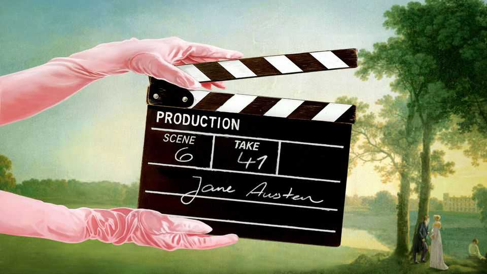

Hollywood’s novel obsession with literary adaptations
Why new film and TV releases resemble a highbrow reading list

Oct 1st 2026
A caterpillar crawls on a finger in the opening shot of a new adaptation of “Sense and Sensibility”. It is a neat symbol of Jane Austen’s technique. In this and other novels, she describes what, in the sweep of history, are tiny things: stolen looks, crossed wires, unspoken longings, the heart’s hidden rhythms. Yet she evokes them so exquisitely as to have transfixed generations of readers—and viewers.
“Pride and Prejudice” is up next. It is a truth universally acknowledged among producers that you are allowed to remake it every decade or so; the latest version is due on Netflix in December. As you may have noticed, Austen’s are not the only classics currently transferring to the screen. “Wuthering Heights” was a hit; “The Odyssey” was a sensation. Other recent adaptations include “Frankenstein” and “Little House on the Prairie”. Among those impending are “East of Eden”, “A Tale of Two Cities” and a version of “A Christmas Carol” starring Johnny Depp.
This shelf-to-screen stampede raises questions about films, tv and books. Why, in a world of apps and AI, is so much airtime devoted to women in bonnets and men in breeches? What distinguishes a soaring reprise from a plodding retread? As for books: if literature is in decline, as it is often said to be, how come the listings resemble a highbrow reading list? The underlying question is about the state of culture: is the costume-drama surge a mark of classiness—or of senescence?
A new version of Austen or Charles Dickens is an adaptation not only of a novel but of previous adaptations; that is part of their fun. This “Sense and Sensibility”, directed by Georgia Oakley (and out in America soon), follows the much-loved version of 1995 with Emma Thompson and Kate Winslet. After wrestling with her feelings in “Normal People”, Daisy Edgar-Jones does so as sensible but secretly lovelorn Elinor Dashwood, minus the sex but with some impressively frenetic dancing. Esmé Creed-Miles is her unsecretly passionate sister, Marianne.
The setting is rugged moorland rather than pastoral idyll. Again the Dashwoods juggle bland but noble, hot yet caddish and unavailable love interests, but now the tone is more earnest than satirical. The crucial bits in Austen’s dramas are often silent, reckons Andrew Davies, author of screenplays including the wet-shirted “Pride and Prejudice” of 1995 (and of “An Unsuitable Boy”, a wry memoir). They are moments when “You think, ‘God yes! He loves her—and she loves him’.” Only fine acting can convey the interior depths plumbed in great novels. This film has it.
The joys and woes of archaic characters may (like caterpillars) seem trifling. The narrowness, it turns out, is not a drawback for producers but a plus. These books strip away modern ephemera to focus on elemental themes like love and money. Period settings, notes Jinny Howe, a bigwig at Netflix, feel “exotic” in “a high-speed, high-tech digital world”. Like fairy tales, old stories are consoling (as are nice frocks). “When we think we’re going to be wiped out by a terrible climate event or AI robots,” says Mr Davies, people “reach for something comforting and familiar.”
There is a commercial logic, too. Shows and movies based on books are a surer bet than original ideas. So far this year they had 3.4 times the global demand of the average title, calculates Christofer Hamilton of Parrot Analytics, a research firm. Literary titans have established followings that hype up adaptations in online ding-dongs over their merits or anachronisms.
To modish critics, a glut of frock-coated men and women saying “I declare” suggests a failure of imagination. Crafting knockout narratives is hard; reviving old ones seems easier. To which insiders say: humbug! The pressure of expectations can be “daunting”, says Ms Howe. The challenges are different but real. Slavish adherence to a text can be sterile; disfiguring it (à la “Wuthering Heights”) can look absurd. Louise Willder, author of “The Book Was Better”, a witty survey of adaptations, calls out the film of “The Scarlet Letter”, which puts in skinny-dipping and a man dancing with a deer carcass on his head.
As when bards retold myths, she argues, every screen version imparts a trace of its age. The go-to moves in dramatising modern novels are to make everyone good-looking, tack on a happy ending and move the story to America. Some of that is trickier with classics (though “Clueless” transplants “Emma” to Beverly Hills). Often sex and violence are added. “The Odyssey” includes plenty of gore, but also omits some Homeric episodes evidently deemed off-putting, like the hero’s rampant adultery and mass execution of slave girls. The main job, says Ms Howe, is to identify “what about [the book] cuts through and feels relevant to audiences today.”
The new “Sense and Sensibility” does that by emphasising the relationship between the sisters—fittingly in an era disinclined to see men as women’s sole concern. Mr Davies is writing a version of “Mansfield Park” which will visit the slave plantation whence a family in Austen’s novel derive their wealth. Both tweaks extrapolate from the books without violating them.
Or consider “East of Eden”. Featuring a lithe James Dean (and his mesmerising quiff), the movie of 1955, directed by Elia Kazan, tackled only a slice of John Steinbeck’s novel of familial rivalry and rejection, destiny and free will. A seven-part version out on Netflix on October 1st—scripted by Zoe Kazan, Elia’s grand-daughter—takes on the whole sprawling saga. The opening scenery in Connecticut is weathered but beautiful, as are the men. When the action moves to big-skied California, Ms Kazan reinstates Lee, a Chinese-American character cut in the film.
And she reimagines Cathy (Florence Pugh), a prostitute and murderer who in the novel embodies evil. Here a background of abuse makes her pitiably human; a killer with a hint of avenging angel. Such reboots, says Robert Douglas-Fairhurst, a professor at Oxford, “aren’t just adapting old stories; they’re showing how these stories can always adapt themselves to changing circumstances”.
There is a paradox here. Reading for pleasure is declining. Some teachers assign passages from novels, not whole books, to screen-addled pupils. Many American college students struggled to understand the opening page of Dickens’s “Bleak House”. Serious fiction is said to be on the skids; romance, fantasy and their mutant offspring are the booming genres.
So you might expect the appeal of the classics for film-makers to wane. You might also suspect that, for many viewers, watching an adaptation of a chewy text is a substitute for reading it. This is true of some students of “Romeo and Juliet”, who, noted an examiner’s report in England, betrayed their reliance on the film starring Leonardo DiCaprio by “making specific references to guns and petrol stations”.
Yet lots of readers are indeed picking up the books of the films. Penguin Classics, a publishing imprint, says that in 2026 sales of “The Odyssey” are up 265% in Britain and 599% in India; sales have quadrupled in America, reports Circana BookScan, a market tracker. “Wuthering Heights” topped Britain’s bestseller list, a feat for a bizarre novel published 180 years ago. These boosts augment a trend in which young readers are discovering classic authors on social media, and, as Jessica Harrison of Penguin Classics puts it, “having their minds blown by Dostoyevsky”.
Sales perk up months before buzzy releases, says Tom Rowley, a former Economist writer now running Backstory, a chic London bookshop. Some diligent people still read the novel in advance. Readers are not seeking refunds on finding there are no scenes inside the Trojan horse in Homer, nor sex in a barn in “Wuthering Heights”.
Thus, says Ms Willder, classic novels, like genes, are surviving through adaptations. They are also helping a pinched film industry. Don’t be snooty about yet another “Pride and Prejudice” or “A Tale of Two Cities”. It is a far, far better thing that they do than letting the art forms wither. ■